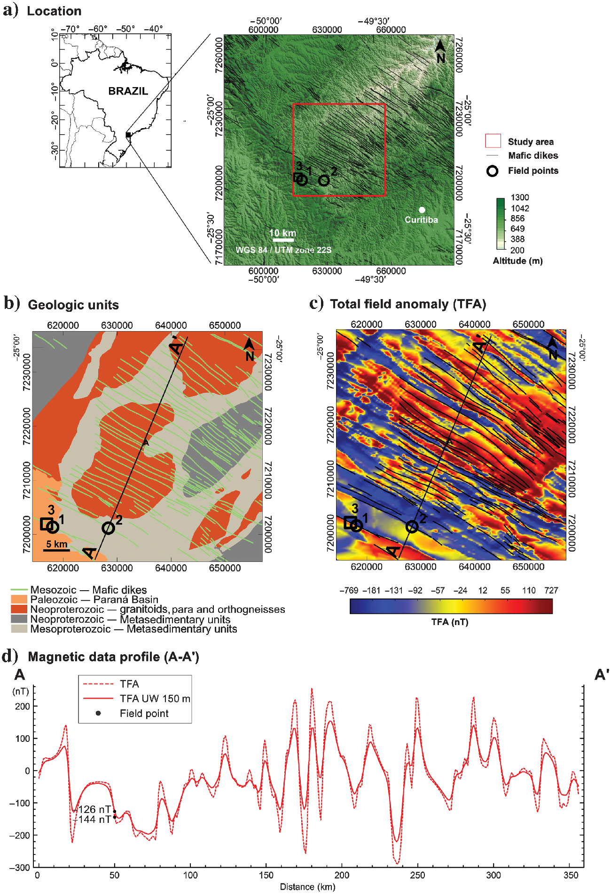

Fourier domain vertical derivative of the nonpotential squared analytical signal of dike and step magnetic anomalies: A case of serendipity

Resumo em Português
Derivadas verticais de campos não-potenciais são, intencional ou não intencionalmente, frequentemente calculadas no domínio de Fourier, produzindo resultados não físicos, mas interpretáveis. Utilizando o modelo de dique, demonstramos que a derivada vertical da amplitude do sinal analítico ao quadrado calculada no domínio de Fourier não corresponde à verdadeira derivada vertical. Derivamos uma expressão analítica para essa pseudoderivada vertical, fornecendo um significado matemático para ela. Uma diferença significativa entre a pseudoderivada e a verdadeira derivada vertical é que a primeira possui raízes reais, enquanto a segunda não.Aproveitando essa propriedade, verificamos, por meio de dados sintéticos e de campo, que a pseudoderivada vertical pode ser utilizada para interpretação qualitativa e quantitativa de dados magnéticos, apesar de não ser fisicamente rigorosa. Como exemplo de sua utilidade na interpretação qualitativa, convertemos a imagem da pseudoderivada em uma imagem binária na qual as anomalias são tratadas como objetos discretos, permitindo aprimorá-las morfologicamente, desconectá-las, classificá-las e filtrá-las usando ferramentas de análise de forma e morfologia matemática. Ilustramos também sua utilidade na interpretação quantitativa, derivando uma fórmula para estimar as profundidades de diques magnéticos delgados e degraus infinitos. Os resultados são corroborados pela observação de afloramentos identificados em levantamentos de campo.